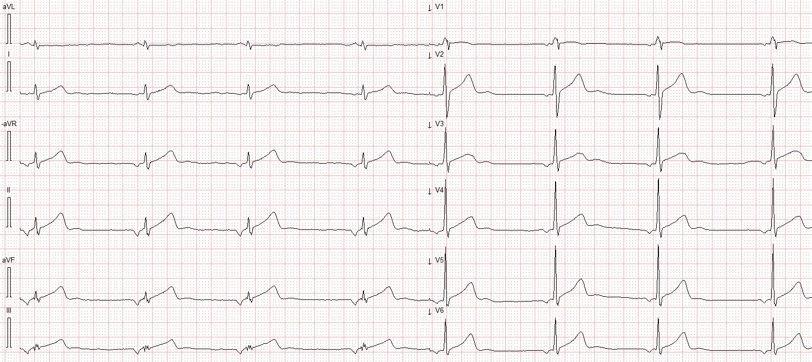
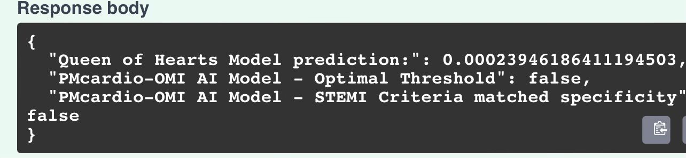
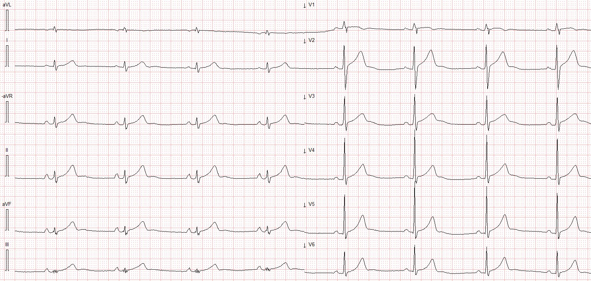
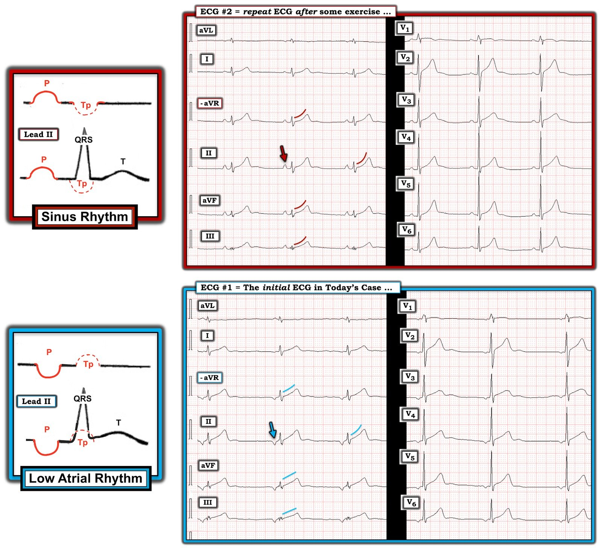

23/02/2023 — Một người đàn ông ở độ tuổi 40 bị đau thượng vị và ST chênh lên
Bản dịch tiếng Việt của bài "A man in his 40s with epigastric pain and ST Elevation" – Dr. Smith’s ECG Blog. Giữ nguyên toàn bộ 5 hình ảnh của bản gốc.
Ca bệnh do Magnus Nossen MD gửi, Pendell Meyers viết bài
Một người đàn ông ở độ tuổi 40, trước đây khỏe mạnh, đến khoa cấp cứu (ED) vì đau bụng vùng thượng vị lúc có lúc không trong vài ngày. Các dấu hiệu sinh tồn trong giới hạn bình thường.
Không rõ bệnh nhân có đang đau vào thời điểm ghi điện tâm đồ đầu tiên hay không:


Đây là kết quả đọc của Queen of Hearts của PM Cardio (công cụ AI đọc điện tâm đồ do Meyers, Smith và nhóm PM Cardio huấn luyện bằng hàng nghìn ca bệnh cùng kết cục của chúng):


Nhóm điều trị lo ngại về các đoạn ST chênh lên có thể do thiếu máu cục bộ trên điện tâm đồ ở trên, nên họ mang đến hỏi ý kiến Dr. Nossen.
Dr. Nossen không cần đến AI và đọc bản ghi này là nhịp nhĩ lạc chỗ (ectopic atrial rhythm) (nhịp thoát nhĩ lạc chỗ vì tần số tim vào khoảng 48 lần/phút), kèm ST chênh lên biến thể bình thường, nhiều khả năng bị phóng đại bởi sóng tái cực nhĩ (gọi là sóng “Ta”).
Dr. Nossen đã làm siêu âm tại giường và kết quả được đọc là bình thường. Sau đó ông cho bệnh nhân làm vài động tác squat ngay trong phòng, với hy vọng làm nút xoang tăng tần số và chiếm quyền điều khiển nhịp từ ổ nhĩ lạc chỗ.
Sau khi tần số tim tăng nhẹ, đây là điện tâm đồ ghi lại:


Giờ đây khi nhịp đã chuyển trở lại nhịp xoang, chúng ta có thể thấy phần ST chênh lên (STE) và phần sóng T to ra do sóng Ta đã bị loại bỏ, chỉ còn lại ST chênh lên biến thể bình thường và sóng T bình thường.
Troponin âm tính.
Bệnh nhân được thăm khám đánh giá đau bụng, chẩn đoán chưa rõ, và có thể cho xuất viện.
Những điểm cần học:
Nhịp nhĩ lạc chỗ có thể tạo ra các dấu hiệu tái cực nhĩ dễ bị nhầm với thiếu máu cục bộ cấp, STEMI hoặc OMI.
Nếu bạn có thể làm tăng tần số tim của bệnh nhân một cách an toàn và dễ dàng, bạn có thể chuyển bệnh nhân về nhịp xoang và ghi lại điện tâm đồ để xem sóng tái cực nhĩ có phải là nguyên nhân gây lo ngại thiếu máu cục bộ hay không.
Xem các ca tương tự sau:
A man in his sixties with chest pain (Một người đàn ông ở độ tuổi sáu mươi bị đau ngực)
Why is there inferior ST elevation, and would you get posterior leads? (Vì sao có ST chênh lên ở thành dưới, và bạn có ghi chuyển đạo phía sau không?)
Sudden CP and SOB with Inferior ST Elevation and in STE in V1. Is it inferior and RV OMI? (Đau ngực và khó thở đột ngột kèm ST chênh lên ở thành dưới và ST chênh lên ở V1. Đây có phải OMI thành dưới và thất phải?)
Xem thêm các bài về sóng tái cực nhĩ:
K. Wang Video lecture: the Atrial Repolarization Wave (Ta Wave) (Bài giảng video của K. Wang: sóng tái cực nhĩ (sóng Ta))
Look at this ST Depression (Hãy nhìn đoạn ST chênh xuống này)
Atrial Repolarization Wave Mimicking ST Depression (Sóng tái cực nhĩ giả ST chênh xuống)
What is this ST Depression? (Hint: there are 2 etiologies) (Đoạn ST chênh xuống này là gì? (Gợi ý: có 2 nguyên nhân))

==================================
Bình luận của KEN GRAUER, MD (23/2/2023):
==================================
Vì ca hôm nay do Dr. Nossen, người hành nghề ở Na Uy, đóng góp — điện tâm đồ hôm nay sử dụng định dạng Cabrera. Với những bạn đọc chưa quen với định dạng này — tôi đã điểm lại các đặc điểm của nó trong Phần bổ sung ở cuối trang của bài ngày 24 tháng Tư năm 2022 trên Dr. Smith’s ECG Blog.
MẤU CHỐT để đọc ca hôm nay — là phải biết đến hiện tượng Emery (Emery Phenomenon). Như đã nhấn mạnh trong Bình luận của tôi ở cuối trang của bài ngày 3 tháng Sáu năm 2020 trên Dr. Smith’s ECG Blog — Hầu như ai cũng bị đánh lừa vào lần thứ 1 gặp hiện tượng này. Vì nó có thể dẫn đến thông tim hoặc nhập viện không cần thiết — nên định kỳ ôn lại hình ảnh điện tâm đồ này là điều đáng làm.
- Manh mối thứ 1 trong ca hôm nay cho thấy nhiều khả năng không cần thông tim — nằm ở Bệnh sử. Bệnh nhân là một người đàn ông ở độ tuổi 40, trước đây khỏe mạnh, đến viện vì đau bụng vùng thượng vị từng cơn trong vài ngày qua. Dù luôn có ngoại lệ — bối cảnh lâm sàng này nghe như một bệnh cảnh có tỷ lệ mắc bệnh mạch vành cấp thấp hơn .
- Manh mối thứ 2 — nằm ở việc xác định nhịp. Để cho rõ, trong Hình 1 — tôi đã đặt 2 điện tâm đồ của ca hôm nay cạnh nhau. Tôi đặt điện tâm đồ đầu tiên ( = điện tâm đồ #1) ở DƯỚI CÙNG của Hình 1.
- Lưu ý sóng P âm ở chuyển đạo II của điện tâm đồ #1 (mũi tên XANH LAM). Xét khoảng PR bình thường đi kèm sóng P âm này — điều đó gợi ý đã có nhịp nhĩ thấp (chứ không phải nhịp bộ nối) trên điện tâm đồ ban đầu của bệnh nhân. Nhận biết rằng sự hiện diện của sóng P âm ở các chuyển đạo thành dưới (dù là do nhịp nhĩ thấp hay nhịp bộ nối) — tạo tiền đề cho hiện tượng Emery, và đóng vai trò là Manh mối thứ 2 cho thấy nhiều khả năng có một phần ST chênh lên không do thiếu máu cục bộ.
Điều gì xảy ra với hiện tượng Emery?
Các hình minh họa sơ đồ ở bên trái trong Hình 1 — minh họa điều xảy ra với hiện tượng Emery.
- Sóng tái cực nhĩ (tức là sóng T của sóng P) luôn luôn có mặt trên điện tâm đồ. Với nhịp xoang, thời điểm của Tp phần lớn sẽ trùng với thời điểm của phức bộ QRS — và do đó sẽ không được nhận thấy trên điện tâm đồ (nửa hình tròn ĐỎ nét chấm, thấy trong hình minh họa sơ đồ PHÍA TRÊN của Hình 1).
- Lưu ý rằng Tp có hướng ngược với sóng P. Do đó, với nhịp xoang bình thường (trong đó theo định nghĩa, sóng P sẽ dương ở chuyển đạo II) — Tp sẽ âm.
- NHƯNG — NẾU sóng P ở chuyển đạo II âm (như có thể gặp với hoặc nhịp nhĩ thấp hoặc nhịp bộ nối) — thì Tp sẽ dương (nửa hình tròn ĐỎ nét chấm, thấy trong sơ đồ PHÍA DƯỚI của Hình 1). Nếu sóng Tp có kích thước lớn và dương — nó có thể làm biến dạng phần cuối phức bộ QRS, và tạo ra ấn tượng giả về ST chênh lên.
Những điểm CHÍNH:
Kích thước của sóng Tp sẽ tương xứng với kích thước của sóng P của nó. Một sóng P nhỏ sẽ tạo ra sóng Tp nhỏ tương ứng. Một sóng P lớn sẽ tạo ra sóng Tp lớn hơn nhiều.
- Tác động của sóng tái cực nhĩ ( = sóng Tp — còn gọi là sóng “Ta” hay sóng T nhĩ) có hướng ngược lại sẽ còn lớn hơn so với những gì thể hiện trong các hình minh họa sơ đồ ở Hình 1 — bởi vì thời gian bình thường của sóng Ta dài hơn đáng kể (dài gấp 2-3 lần) so với thời gian bình thường của sóng P (Francis). Điều này có thể lý giải tác động “phóng đại” lên đoạn ST khi sóng P âm có kích thước lớn.
Yếu tố quan trọng còn lại quyết định mức độ biến dạng ST-T mà hiện tượng Emery có thể gây ra — là độ dài của khoảng PR đối với sóng P âm thấy ở các chuyển đạo thành dưới.
- Nếu khoảng PR của các sóng P âm ở chuyển đạo thành dưới ngắn hơn (như nhiều khả năng gặp với nhịp bộ nối ) — thì hiện tượng Emery có thể dẫn đến ST chênh lên dương tính giả nhiều hơn (với Tp dịch chuyển sang phải nhiều hơn, như đã thấy ở điện tâm đồ trong bài ngày 3 tháng Sáu năm 2020).
- Ngược lại — khoảng PR của các sóng P âm ở chuyển đạo thành dưới trong ca hôm nay dài hơn. Tôi tin đây là điều lý giải cho “hiệu ứng làm thẳng” đoạn khởi đầu ST của hiện tượng Emery, với mức ST chênh lên giả tại điểm J khiêm tốn hơn (đoạn khởi đầu ST bị làm thẳng được thể hiện bằng các đường XANH LAM ở điện tâm đồ #1) — so với các đoạn ST dốc lên từ từ, bình thường hơn khi có nhịp xoang (các đường cong MÀU TÍM ở điện tâm đồ #2). Do hiện tượng Emery — nhiều sóng T ở chuyển đạo chi trông có vẻ tối cấp ở điện tâm đồ #1 (các đường XANH LAM trên bản ghi này).


Vài suy nghĩ bổ sung rời rạc về ca hôm nay:
- Manh mối thứ 3 trong ca hôm nay cho thấy điện tâm đồ ban đầu không biểu hiện một biến cố tim cấp — là hình ảnh sóng T nhọn tương tự nhau ở hầu như tất cả các sóng T trên điện tâm đồ #1. Ngược lại, trong nhồi máu cơ tim cấp — các thay đổi ST-T đáng lo ngại có khả năng khu trú trên điện tâm đồ cao hơn nhiều, thường tạo ra thay đổi soi gương ở các chuyển đạo đối diện (và thường không tạo ra một bức tranh trong đó có nhiều sóng T trên bản ghi có hình dạng giống nhau đến vậy).
- Tự thân — nhịp nhĩ thấp thường gặp như một biến thể bình thường. Khi thấy từng lúc ở một người trẻ tuổi khỏe mạnh, không triệu chứng — Không cần đánh giá gì thêm về nhịp này.
- Dù vậy — điều thực sự bất thường về nhịp trên điện tâm đồ ban đầu của ca hôm nay — là nhịp chậm rõ rệt! Đây là hậu quả của phản ứng phế vị (vasovagal) với cơn đau bụng của bệnh nhân? — hay là tần số tim “bình thường của anh ấy” do tập luyện thể thao sức bền? — thì không thể biết từ những thông tin chúng tôi được cung cấp. Ngay cả sau khi vận động ở khoa cấp cứu (đã thành công trong việc nâng tần số tim đủ để nhịp xoang trở lại) — tần số tim của bệnh nhân ở điện tâm đồ #2 vẫn hơi dưới 50 lần/phút.
- Siêu âm tim tại giường do Dr. Nossen thực hiện trong ca hôm nay đã phục vụ 2 mục đích hữu ích: i) Nó loại trừ rối loạn vận động thành cấp vào thời điểm một số nhân viên y tế đang lo ngại về một quá trình thiếu máu cục bộ cấp; và, ii) Nó loại trừ HCM (bệnh cơ tim phì đại – Hypertrophic CardioMyopathy)! Cần nhận ra rằng điện tâm đồ nền của bệnh nhân này không hoàn toàn “bình thường” — ở chỗ có sóng R chiếm ưu thế ở chuyển đạo V1. Dù điều này có thể chỉ là một biến thể bình thường hoặc do thể trạng — HCM nằm trong số các nguyên nhân có thể gây sóng R cao ở chuyển đạo V1 mà điện tâm đồ hôm nay có thể phù hợp (Để biết thêm về các Nguyên nhân gây sóng R cao ở V1 — Xin xem Bình luận của tôi ở cuối trang trong bài ngày 10 tháng Mười Hai năm 2022 trên Dr. Smith’s ECG Blog).
- ĐIỀU CỐT LÕI: Cho bệnh nhân vận động ngắn ở khoa cấp cứu, nhằm tăng tần số tim nền đủ để nhịp xoang trở lại, là một thao tác xuất sắc của Dr. Nossen. Như thấy khi so sánh 2 điện tâm đồ hôm nay (Hình 1) — thao tác này đủ để làm giảm ST chênh lên và đưa trở lại hình ảnh đoạn ST dốc lên nhẹ nhàng thấy ở các bản ghi bình thường (các đường cong MÀU TÍM ở điện tâm đồ #2). Với bệnh sử không điển hình và siêu âm tim âm tính — các thay đổi ST-T dương tính giả do hiện tượng Emery đã được xác nhận — và bệnh nhân có thể được cho xuất viện an toàn.